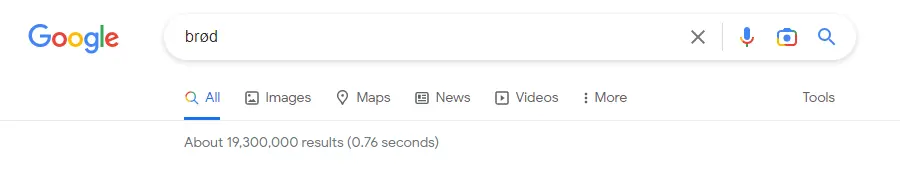

SEO
Seo står for Search Engine Optimization, det betyr å optimalisere sin posisjon høyre opp når man søker på en søkemotror. Søkemotorer finner ut hvilken nettside som kommer på toppen ved hjelp av algoryther som gir nettsider en "poengsum".
Det er stor konkuranse som man ser på bilde over, 19,300,000 søkeresultater på brød det er vanskelig å komme på toppen. Det er noen viktige ting man må gjøre for å få en høy "poengsum" av algrorytmene. Det viktigste på siden er innhold, akitektur og HTML kode struktur. Noen viktige ting utenfor nettsiden er tilit og linker. Det er også mulig å kjøpe plass høyrer opp på søkemotorer, men dette vil ikke gi langvarig trafikk på din nettside.
På denne nettsiden har jeg lagt til "keywords" på alle sidene får å få bedre "score" av google. Jeg har også ryddet opp i html strukturen på nettsiden og lagt til meta description på alle sidene.
UU
UU står for universell utforming som betyr å lage nettsiden tiljenelig for alle selv om de forekempel er fargeblinde. Hvis du har bra UU vil det også øke SEO scoren din sammtidig. På denne nettsiden har jeg litt mørke bakgrunner med hvit text som mennekser som er fargeblinde kan lese, man kan også styre nettsiden ved hjelp av bare tastaturet.
Det er lover om at nettsider skal være tilgjengelig for alle. Nettsider skal oppfylle 35 av 61 av kravene i Forskrift om universell utforming av (IKT)-løsninger.
Denne nettsiden har også en Tilgjengelighetserklæring.